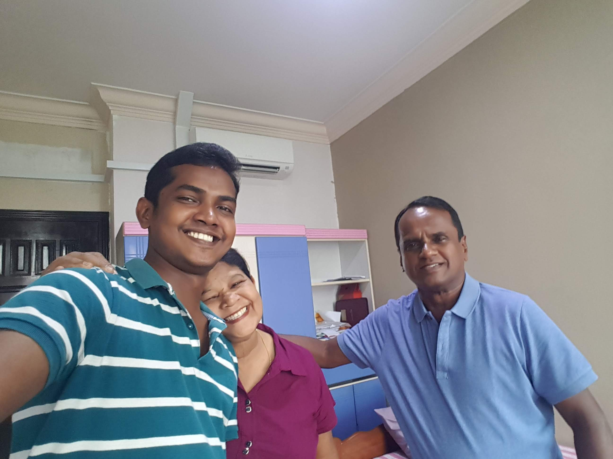
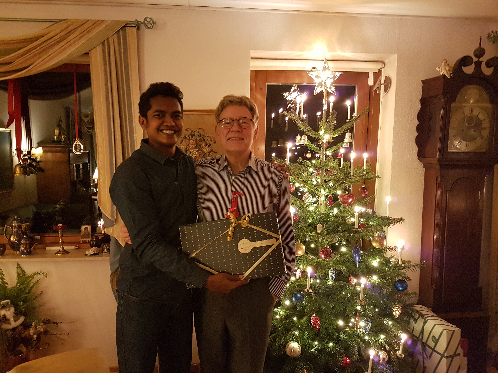
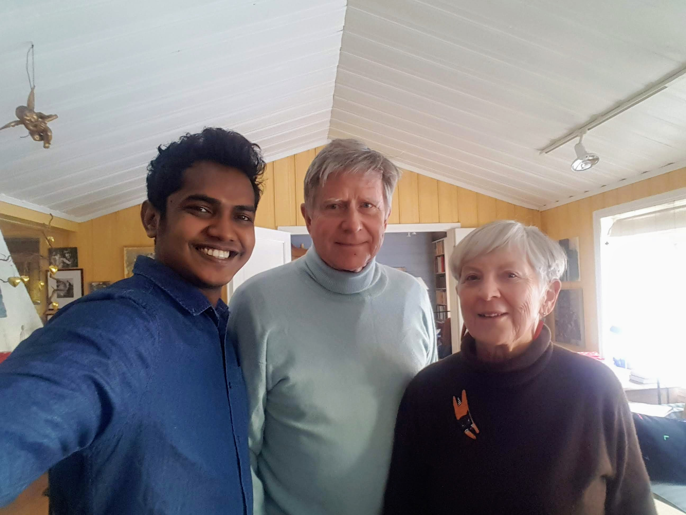

I am a Computer Science PhD student at University College Dublin, Ireland under Professor Michela Bertolotto and Dr. Nhien-An Le-Khac. I liases with Dr. Anh Vu in my research work and he too is a great asset. My research focuses on development of scalable data systems for LiDAR and Imagery data integration.
Major: LiDAR, Hyperspectral and Ortho images, Distributed Databases, Big Data Integration, High Performance Computing, Data Base Integration, Spatial Data Systems, Reomte Sensing Systems.
Projects
[1] UrbanARK [May-2019-Present]
UrbanARK is a tri-partite research project funded by the National Science Foundation, Science Foundation Ireland and Northern Ireland Trust. Me and my team at University College Dublin work in unison with teams at New York University and Queen's University Belfast in exploring flood risk assesment and communication techniques based on Spatial data acquire from remote sensing technologies. The primary data sources for UrbanARK project are, Airborne LiDAR, Mobile LiDAR, Hyperspectral images, Orthorectified images and survey data.
Publications
[1] Vo, Anh Vu, Debra F. Laefer, M. Trifkovic, Chamin Nalinda Lokugam Hewage, Michela Bertolotto, Nhien-An Le-Khac, and Ulrich Oftendinger. "A highly scalable data management system for point cloud and full waveform data."
[1] Vo, Anh Vu, Chamin Nalinda Lokugam Hewage, Gianmarco Russo, Neel Chauhan, Debra F. Laefer, Michela Bertolotto, Nhien-An Le-Khac, and Ulrich Oftendinger. "Efficient LiDAR point cloud data encoding for scalable data management within the Hadoop eco-system." In 2019 IEEE International Conference on Big Data (Big Data), pp. 5644-5653. IEEE, 2019.
Research Presentations
[1] Efficient LiDAR point cloud data encoding for scalable data management within the Hadoop eco-system
COMP20070 Database and Information Systems 2019-20
Lecturer: Professor Michela Bertolotto
Role:Teaching Assistant (TA)(Head Demonstrator)
COMP10120-Computer Programming II 2019/20 Spring
Lecturer: Dr Gavin McArdle
Role:Demonstrator
COMP20070 Database and Information Systems 2019-20
Lecturer: Professor Michela Bertolotto
Role:Teaching Assistant (TA)(Head Demonstrator)
COMP20240 Relational Databases and Information Systems 2019-20
Lecturer: Professor Michela Bertolotto
Role:Demonstrator
Doctor of Philosophy
PhD in Computer Science
I started my PhD in May 2019 and currently pursuing the ultimage goal.
Bachelor of Science
Bachelor of Science in Computer Science
In 2016, I received my BSc.(Hons.)(First Class) in Computer Science from University of Colombo, School of Computing, Sri Lanka
AI Scholar
Artificial Intelligence Scholarship from Pi School, Rome, Italy.
Won a full grant scholarship to participate a 2 month deep learning summer school in Rome, Italy. I did a project, together with my friend/mentor Dr. Douglas Andrade which was funded by Cisco Systems Switzerland and supervised by Nicola Rohrseitz, the Lead Strategic AI program at Cisco and Dr. Sébastien Bratières, the Program Director School of AI at Pi School.
Research Engineer
Full-Stack Software Engineer
Language is a powerful tool and it make strangers friends (sometime lovers ;)). I enjoy talking to people from all backgrounds. One of the easiest way to build a deep connection with a new person is to make a genuine effort to speak in their native language.
I left Sri Lanka in February 2017 and since then I've been living on my own. One of the thing I learn after starting live by myself is how relationships work. Relationships evolve: some relationships grow while some relationships fade away, and meantime we enter into new ones. That's the way it is or that's how the world flows. The only relationship that remain constant is my relationship with my parents. Living by my own making me an open minded person. I love to embrace the adventures that mother nature has destined for me.
The countries I love living/visiting (based on my person experiences) are Sri Lanka, Denmark, Ireland, Italy, Japan and Norway.
if you like to see my travel photos/videos, feel free to follow me on @wanderlustglimpse

My parents

My Danish grandfather
